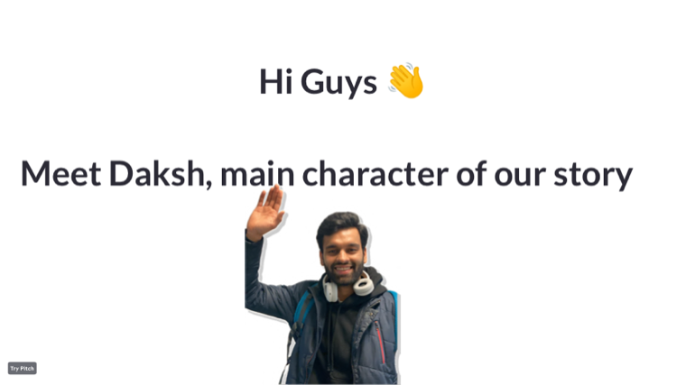
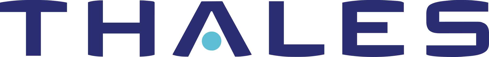
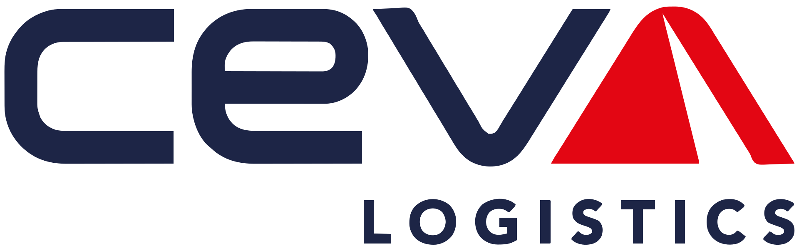
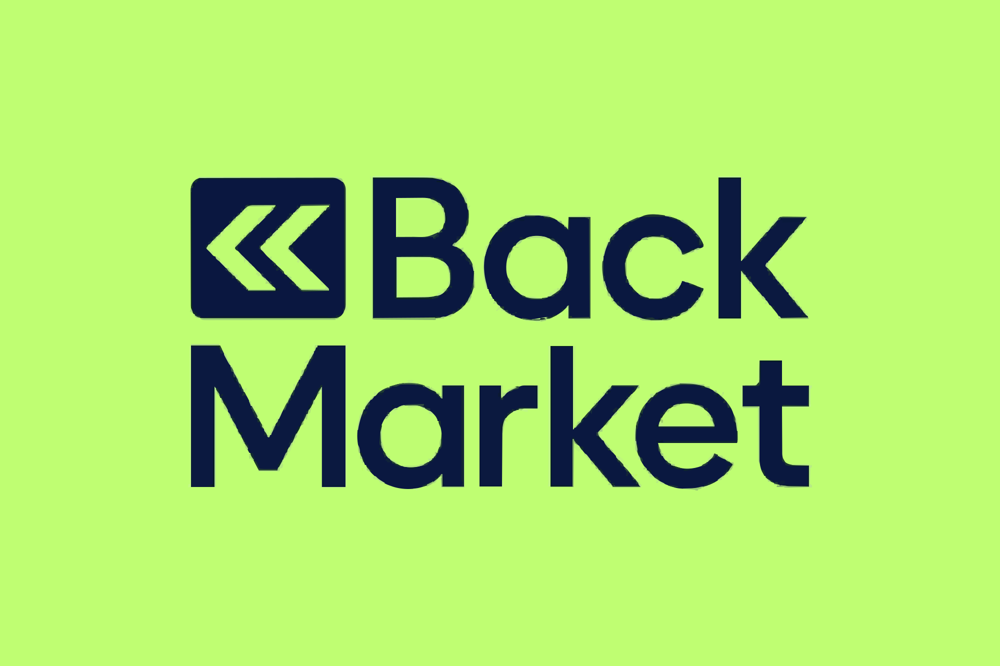

Start-up pitch · EN
SustainSwap
A second life for things. A more affordable campus. A student-to-student marketplace built around reuse, refurbishment and circularity.
Read the pitch deckSustainability, with substance.
ABOUT ME — BETA / 01I'm Daksh. I connect sustainability ambitions with the people, processes and data that make them happen.

A little strategy. A lot of making it happen.
Scroll to get to know meExperience built inside these teams



Sustainability means more to me when it leaves the slide deck and becomes part of how a company works.
My work sits between strategy and execution: turning reporting frameworks into usable data, procurement goals into better processes, and commitments into evidence. From logistics to technology, I bring curiosity, structure and a practical mindset to the same question: how do we make progress real?
Why sustainability mattersAt CEVA Logistics, 2024
Reported weekly at Thales
RFIs, tenders and CO₂ at CEVA
A few tools of the trade
Better systems. Better decisions. Progress you can point to.
Bringing sustainability and AI together. I coordinate ESG benchmarking and vendor engagement, consolidate GHG data for the 2026 CSR Report, and work with global teams on AI for Good — helping nonprofits amplify their impact.
Mapped and automated the CSR process within Purchasing, reported more than 15 sustainable procurement KPIs every week, and presented project success stories at the Global Low Carbon Seminar.
Led the project to improve the 2024 CDP rating and helped reach a 97th-percentile EcoVadis score, with a 12-point year-on-year improvement. Managed more than 20 client RFIs, tenders and CO₂ reports for brands including CMA CGM and Ferrari.
Turned Excel and SQL analysis of 17 KPIs into weekly insights, reviewed the performance of 500+ customer care agents, and supported project delivery for a team of five.
Always learning
MSc International Business Management, Project Management
2025 — PresentMaster in Management · Sustainability
2021 — 20251st place · Green start-up competition
Start-up pitch · EN
A second life for things. A more affordable campus. A student-to-student marketplace built around reuse, refurbishment and circularity.
Read the pitch deck
Investment analysis · EN
An analysis of the BNP Paribas circular economy ETF: what it holds, how it performs, and where capital meets sustainability.
Explore the analysisA chessboard, a good training session, somewhere I haven't been. Different ways to stay curious — and see things from a new perspective.
I also organised a charitable chess tournament to raise funds for the Animal and Bird Welfare Society.
A little more about me

Good conversations start somewhere.
CSR programmes, ESG reporting, or a fresh idea at the intersection of sustainability and data. I'd love to hear about it.
Dakshmehta077@gmail.com